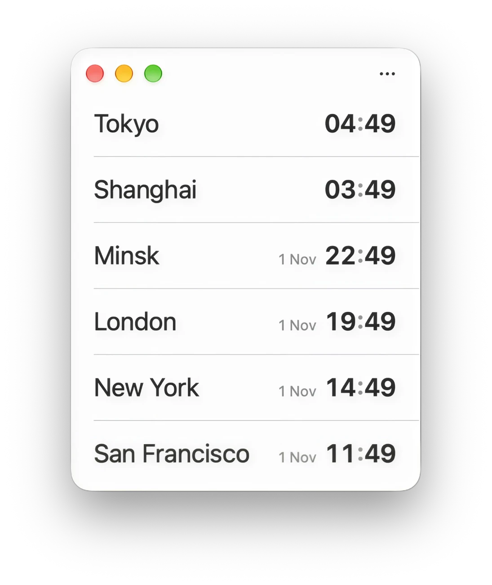
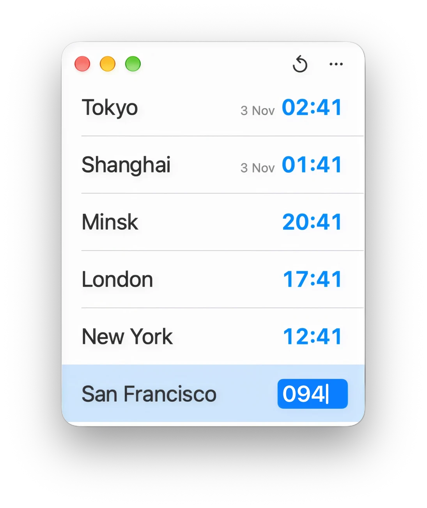
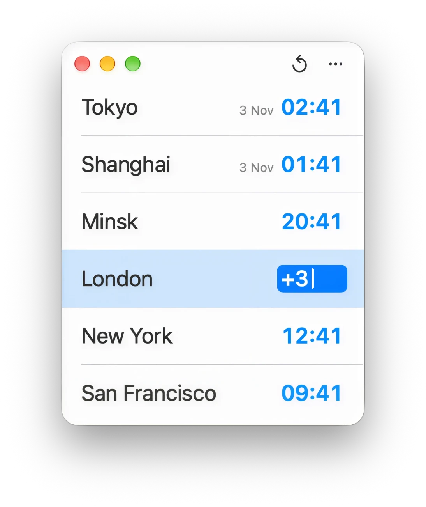
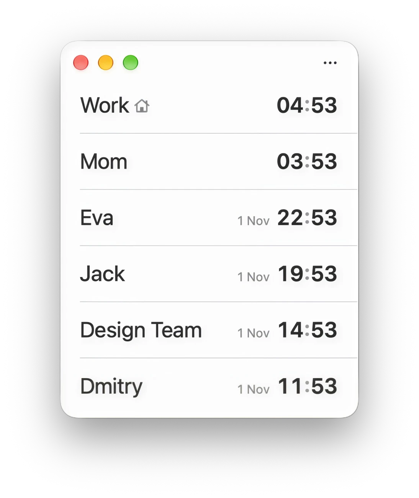
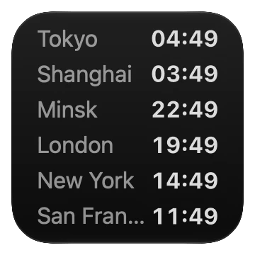

All your cities in one window
Add the cities you care about and see their local time at a glance. When a city is already on another day, Chas shows the date next to the time.

Convert time across time zones instantly
Click a city, type a time your way, and press Return. Chas shows the same moment in every city.


Personalize your clocks with custom names and a home city
Rename cities to names that mean something to you, like “Work” or “Mom”. Your home city is the reference for hour and date differences.

Keep your cities on the desktop
Add the Chas widget to your desktop or Notification Center. It shows the current time in the first cities from your list.
